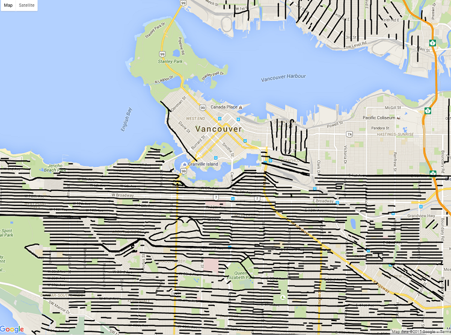

Data Visualization in MongoDB - NOSQL
After much research, I found a way of actually querying specific objects and visualizing them using RoboMongo and Google Drag and Drop
GeoJSON.
For the query part we can use the below technique as specified here:
//[Thematic] Finds all the LineString documents that contain “Avenue” in their name.
db.LineString.aggregate(
{ $match : {
"features.properties.name": /avenue/i
}},
{ $unwind : "$features" },
{ $match : {
"features.properties.name": /avenue/i
}}
)
Here we use the $unwind aggregation stage in order to define what field we want to retrieve. After that we use $match in order
retrieve the documents with the specific conditions. Note that the first match can take advantage of an index (Text, Spatial etc..)
and fasten the time by a lot. By right clicking on the document in MongoDB we can view+store the generated JSON.
However, when working with Spatial data you will probably like to have your data in the map, especially when working with complex
structures. In order to do so, you will need to convert your data from JSON to GeoJSON. Below I will show the regular expression I
used in order to convert my file.
Algorithm JSON file (generated from MongoDB) to GeoJSON:
Erase:
"features" : \{.* AND "coordinates"[^}]*\K\} AND "type" : "Feature" AND "ok" : 1.0000000000000000
AND "id".*,
AND"_id" :
ObjectId(.*`
Replace with: "type" : "FeatureCollection",[^}]*\}, WITH "type" : "Feature", AND "result" : [ WITH
"features" : [
{
"type": "FeatureCollection",
"crs": { "type": "name", "properties": { "name": "urn:ogc:def:crs:OGC:1.3:CRS84" } },
"features" : [
I run these regular expressions using Notepad++:
"features" : \{.*|"coordinates"[^}]*\K\}|"type" : "Feature"|"ok" : 1.0000000000000000|"id".*,|"_id" : ObjectId\(.*,
"type" : "FeatureCollection",[^}]*\}, replace with "type" : "Feature",
Disclaimer: Please notice that your file might follow a different structure, since the way you project the data
obviously effects the
output file. In such a case, extra modification is required.
Now that we have the GeoJSON file we can drag and drop it to Google's GeoJSON API. The above query will give us the roads of Vancouver
that contain "Avenue" on their names:

Thoughts: I believe that this job could be done directly from RoboMongo since the produced JSON can be converted to GeoJSON with some
inferior changes. Also please note that this REGEX is way too complicated and if you are interested in a more stable solution I would
suggest you to use a JSON Library like NodeJS, Jackson etc and generate a brand new file.I came up with this solution and it worked
perfectly for my case.